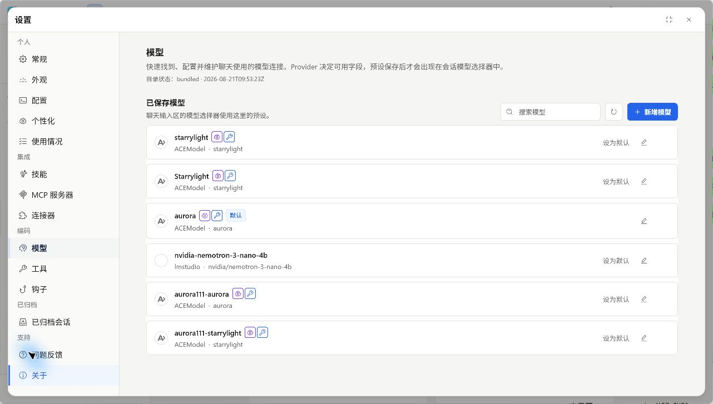
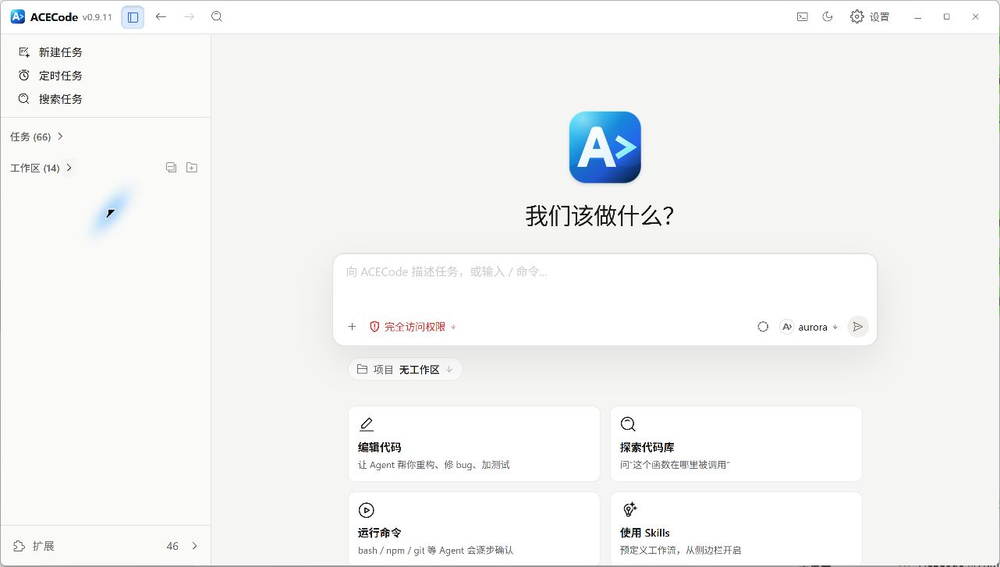
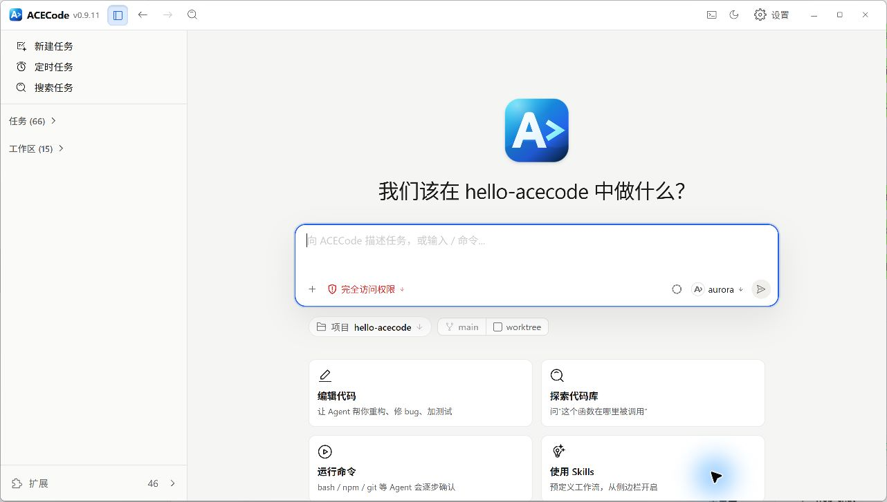
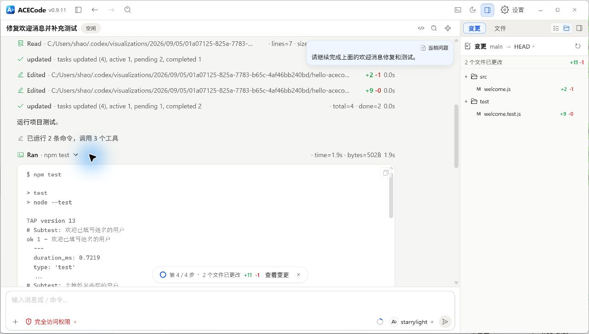

快速开始
从配置模型到完成第一次修改，走一遍完整的 ACECode 工作流程。
配置第一个模型
模型是 ACECode 完成分析与操作时使用的 AI。先保存一个可用的模型连接，再开始对话。
在桌面端配置
- 打开 ACECode，进入 设置 > 模型。
- 点击新增模型，选择服务商。可以使用 ACEModel、已有的服务商，或自定义 OpenAI 兼容接口。
- 按表单填写所需信息，例如 Base URL、API Key 与模型 ID。使用账号登录的服务商，按界面提示完成认证。
- 保存模型。回到任务界面，在输入框下方的模型选择器中选择它。

{kind=link}

在终端中配置
运行配置向导，按提示选择服务商并填写连接信息：
acecode configure进入 TUI 后，可以输入 /model 查看并切换已保存的模型。不同服务商需要的字段可能不同。
打开项目与创建任务
桌面端
选择新建任务，然后选择已有工作区，或打开本地项目目录。这里的工作区就是本次任务要处理的项目位置。
需要完成不依赖项目的问答或通用任务时，选择不使用工作区。
{kind=link}

{kind=link}

终端
进入你的项目目录，再启动 ACECode。把下面的示例路径替换为自己的项目路径：
cd /path/to/your/project
acecodeWindows PowerShell 可以使用 cd C:\Projects\my-project。使用便携版时，保持当前目录为项目目录，并通过 ACECode 程序的完整路径启动。
完成第一次代码修改
描述任务并发送
第一次可以从了解项目开始。输入一个明确的请求，按 Enter 发送：
先阅读这个项目，说明主要目录和启动方式。
告诉我应该从哪个入口文件开始了解。准备让 ACECode 修改代码时，说明目标、范围和验证方式：
找到登录表单的校验逻辑，为空密码增加提示。
保持现有页面样式，只修改相关代码。
完成后运行对应测试，并说明修改了哪些文件。添加相关上下文
- 输入
@，选择工作区内的文件或目录。 - 在桌面端通过添加入口引用本地文件，包括图片。具体处理能力取决于所选模型和可用工具。
- 已经知道报错、预期结果或限制时，直接附在请求中。

确认模型与权限
发送前检查当前模型和权限模式。默认权限模式下，读取项目内容通常可以自动进行；文件写入和命令执行会按权限规则请求确认。确认时查看工具要做什么、作用于哪些文件。
查看并验证修改
ACECode 会逐步展示回复和工具执行过程。你可以查看修改的文件、运行的命令以及测试结果，再判断任务是否达到了预期。
- 检查改动范围：确认修改集中在这次任务涉及的文件。
- 阅读差异：查看新增和删除的代码，确认行为符合要求。
- 核对验证结果：阅读测试输出；需要手动操作的功能，再运行项目检查。
{kind=link}


结果还需要调整时，在同一个任务中继续补充要求。需要停止当前执行时，使用界面中的停止操作，再给出下一步指令。
继续已有任务
任务记录会保存下来。桌面端可以从侧边栏回到已有任务；终端中，在同一个项目目录运行：
acecode --resume也可以在 TUI 中输入 /resume 打开会话选择器。恢复后，先查看已有上下文，再说明接下来要完成的目标。